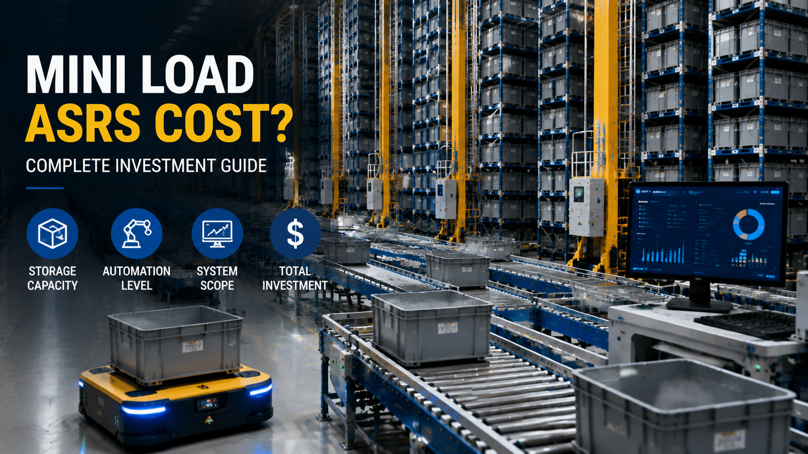

How Much Does a Mini Load ASRS Cost? Complete Investment Guide for Automated Bin Storage Systems

Summary
Understanding Mini Load ASRS Investment
When companies consider warehouse automation, one of the first questions is:
How much does a Mini Load ASRS cost?
The answer is not a fixed number.
Unlike purchasing a standard machine, an automated warehouse system is a customized engineering project involving:
Warehouse layout
Storage requirements
Product characteristics
Order processing requirements
Automation level
Software integration
Equipment configuration
A Mini Load ASRS investment can vary significantly depending on the project requirements.
For companies managing thousands of SKUs, frequent picking operations, and increasing labor costs, the real question is not only:
"How much does the system cost?"
but also:
"How much value can the automated warehouse create?"
This article explains the major factors affecting Mini Load ASRS cost and how companies should evaluate warehouse automation investment.
Technology
- What Is a Mini Load ASRS System?
- Automated Storage and Retrieval System for High SKU Warehouses
- A Mini Load ASRS is an automated storage solution designed for handling small and medium-sized products stored in bins or containers.
- The system typically includes:
- Automated storage racks
- High-speed stacker cranes
- Storage bins
- Conveyor systems
- Picking stations
- Warehouse control software
- The basic workflow is:
- Product Receiving
- ↓
- Automatic Storage
- ↓
- Warehouse Management System Processing
- ↓
- Automatic Retrieval
- ↓
- Goods-to-Person Picking
- ↓
- Sorting and Shipping
- Mini Load ASRS is widely used in:
- E-commerce fulfillment centers
- Retail distribution warehouses
- Spare parts warehouses
- Manufacturing logistics centers
Challenge
Why Mini Load ASRS Cost Is Difficult to Define
Automated Warehouse Projects Are Customized Solutions
Many customers expect a simple equipment price when searching for:
"Mini Load ASRS cost"
However, the final investment depends on many project-specific factors.
Two warehouses with the same floor area may require completely different automation solutions because of differences in:
SKU quantity
Product dimensions
Order frequency
Storage strategy
Throughput requirements
A professional ASRS solution starts with warehouse analysis rather than equipment quotation.
Solution
Factor 1: Warehouse Size and Storage Capacity
Warehouse Layout Directly Influences Investment
The warehouse size is one of the most important factors affecting Mini Load ASRS cost.
A larger warehouse usually requires:
More storage locations
More racks
More stacker cranes
Longer conveyor systems
More complex control systems
Important planning factors include:
Storage Capacity
The number of required storage positions directly affects system scale.
More storage locations mean:
Larger rack structures
More equipment investment
Higher automation capacity
Number of Aisles
Mini Load ASRS systems are designed with multiple storage aisles.
The number of aisles affects:
Stacker crane quantity
Warehouse throughput
System investment
Equipment Quantity
A project may require:
One stacker crane system
or
Multiple independent ASRS aisles working together
The final configuration depends on storage volume and operational requirements.
Workflow & Layout
Factor 2: SKU Characteristics
Product Features Determine System Design
SKU characteristics have a major impact on Mini Load ASRS investment.
Different products require different storage strategies.
Important factors include:
Number of SKUs
Warehouses with thousands of SKUs usually require:
More storage locations
Better inventory management
Faster retrieval systems
Product Size and Weight
Product dimensions affect:
Bin selection
Storage density
Equipment design
Small products may use compact bins.
Larger products may require customized storage solutions.
Bin Type
The selected storage container influences:
Storage efficiency
Rack design
Handling system
Common considerations include:
Bin dimensions
Load capacity
Product protection requirements
Picking Frequency
High-frequency picking warehouses usually require:
Faster retrieval speed
Optimized picking stations
Higher system performance
For example:
E-commerce fulfillment centers usually require faster response compared with long-term spare parts storage.
Results & ROI
- Factor 3: Automation Level
- Different Automation Levels Create Different Investment Requirements
- Warehouse automation can range from simple assistance systems to fully automated solutions.
- Manual Warehouse
- Traditional warehouse operations rely mainly on human workers.
- Typical characteristics:
- Manual storage
- Manual searching
- Person-to-goods picking
- Higher labor dependency
- Initial investment is lower
- but operational costs increase as business grows.
- Semi-Automated Warehouse
- Semi-automatic systems combine manual operation with automation equipment.
- Examples include:
- Automated conveyors
- Assisted picking systems
- Partial warehouse control systems
- This approach can improve efficiency while maintaining lower initial investment.
- Fully Automated Mini Load ASRS
- A complete automated warehouse includes:
- Automated storage and retrieval
- High-speed stacker cranes
- Conveyor integration
- Goods-to-person picking
- Warehouse software control
- Advantages include:
- Higher efficiency
- Better inventory accuracy
- Reduced labor dependency
- Scalable operation
Equipment List
- Factor 4: System Scope and Integration Requirements
- Complete Warehouse Automation Investment
- The final ASRS warehouse cost depends not only on storage equipment but also on the complete project scope.
- A complete Mini Load ASRS solution may include:
- Storage Rack System
- Responsible for:
- Bin storage
- High-density warehouse utilization
- Structural support
- Stacker Crane System
- Responsible for:
- Automatic storage
- Automatic retrieval
- High-speed operation
- Conveyor and Sorting System
- Responsible for:
- Material transportation
- Picking connection
- Order processing
- Picking Stations
- Responsible for:
- Goods-to-person operation
- Order fulfillment
- WMS/WCS Software
- Responsible for:
- Inventory management
- Equipment coordination
- Warehouse operation control
- The more complete the automation scope
- the higher the initial investment
- but the greater the long-term operational value.
Project Overview / Opening
Mini Load ASRS Cost vs Long-Term Business Value
Why Companies Invest in Warehouse Automation
A Mini Load ASRS should not be evaluated only by initial purchase cost.
Companies should consider the long-term benefits.
Labor Cost Reduction
Automation reduces dependence on repetitive manual warehouse operations.
Higher Storage Utilization
Vertical storage helps companies maximize warehouse space.
Faster Order Fulfillment
Automated retrieval and picking improve delivery speed.
Improved Accuracy
Digital warehouse management reduces inventory and picking errors.
Better Scalability
Automated systems support future business expansion.
Key Points
- How to Evaluate Mini Load ASRS ROI
- Key Investment Evaluation Factors
- Before investing in an automated warehouse system, companies should analyze:
- Current Warehouse Cost
- Including:
- Labor expenses
- Warehouse rental cost
- Inventory management cost
- Operational inefficiency
- Future Business Growth
- Consider:
- SKU growth
- Order volume increase
- Distribution expansion
- Automation Benefits
- Evaluate:
- Labor savings
- Productivity improvement
- Space optimization
- Accuracy improvement
- A well-designed Mini Load ASRS solution should create long-term operational advantages rather than simply replace manual work.
Implementation / Workflow
How to Plan a Mini Load ASRS Project
Professional Warehouse Automation Planning Process
A successful project usually follows these steps:
Step 1: Analyze Warehouse Requirements
Collect information about:
Product types
SKU quantity
Storage capacity
Daily orders
Required throughput
Step 2: Develop Warehouse Layout
Design:
Storage configuration
Equipment arrangement
Material flow
Step 3: Select Automation Solution
Determine:
ASRS type
Number of aisles
Equipment configuration
Software requirements
Step 4: Estimate Investment and ROI
Analyze:
Project cost
Expected benefits
Long-term value
Step 5: Implement and Deliver
Including:
Equipment manufacturing
System integration
Testing
Installation support
Customer Value / Results
Why Work With an ASRS Project Integration Partner
Beyond Equipment Purchasing
Building an automated warehouse requires more than buying individual machines.
Companies need support in:
Warehouse planning
System design
Supplier selection
Equipment integration
Project management
Delivery coordination
13ASRS works as a China Industrial Automation Project Integration Partner, helping global customers design and deliver customized warehouse automation solutions.
Our focus is not only supplying equipment, but helping customers build practical and reliable automation systems.
Conclusion / Next Step
Need a Customized Mini Load ASRS Budget?
Every warehouse automation project is different.
If you are planning:
High SKU warehouse automation
E-commerce fulfillment automation
Spare parts storage automation
Retail distribution center upgrades
We can help you evaluate:
Warehouse layout
Mini Load ASRS configuration
Investment requirements
Automation strategy
Contact us to get your customized Mini Load ASRS solution and project budget evaluation.
SEO Title
How Much Does a Mini Load ASRS Cost? Complete Investment Guide for Automated Bin Storage Systems
SEO Description
Understanding Mini Load ASRS Investment
When companies consider warehouse automation, one of the first questions is:
How much does a Mini Load ASRS cost?
The answer is not a fixed number.
Unlike purchasing a standard machine, an automated warehouse system is a customized engineering project involving:
Warehouse layout
Storage requirements
Product characteristics
Order processing requirements
Automation level
Software integration
Equipment configuration
A Mini Load ASRS investment can vary significantly depending on the project requirements.
For companies managing thousands of SKUs, frequent picking operations, and increasing labor costs, the real question is not only:
"How much does the system cost?"
but also:
"How much value can the automated warehouse create?"
This article explains the major factors affecting Mini Load ASRS cost and how companies should evaluate warehouse automation investment.
Related Blog
Start with Your Business Challenge
Tell us about your warehouse, factory, or production requirements. We'll help you explore practical automation solutions and relevant project references.